library(tidyverse)
library(skimr)
# install.packages("hexbin") # if you do not have the "hexbin" package
library(hexbin)R Lab 1 - ggplot visualization
Loading R packages
Question 1
Q1a
Read the data file, bikeshare_cleaned.csv, as the data.frame object with the name, bikeshare, using (1) the read_csv() function and (2) its URL, https://bcdanl.github.io/data/bikeshare_cleaned.csv.
url <- 'https://bcdanl.github.io/data/bikeshare_cleaned.csv'
bikeshare <- read_csv(url)Rows: 17376 Columns: 12
── Column specification ────────────────────────────────────────────────────────
Delimiter: ","
chr (5): month, date, wkday, seasons, weather_cond
dbl (7): cnt, year, hr, holiday, temp, hum, windspeed
ℹ Use `spec()` to retrieve the full column specification for this data.
ℹ Specify the column types or set `show_col_types = FALSE` to quiet this message.bikeshare# A tibble: 17,376 × 12
cnt year month date hr wkday holiday seasons weather…¹ temp hum
<dbl> <dbl> <chr> <chr> <dbl> <chr> <dbl> <chr> <chr> <dbl> <dbl>
1 16 2011 01 01 0 saturday 0 spring Clear or… -1.33 0.947
2 40 2011 01 01 1 saturday 0 spring Clear or… -1.44 0.896
3 32 2011 01 01 2 saturday 0 spring Clear or… -1.44 0.896
4 13 2011 01 01 3 saturday 0 spring Clear or… -1.33 0.636
5 1 2011 01 01 4 saturday 0 spring Clear or… -1.33 0.636
6 1 2011 01 01 5 saturday 0 spring Mist or … -1.33 0.636
7 2 2011 01 01 6 saturday 0 spring Clear or… -1.44 0.896
8 3 2011 01 01 7 saturday 0 spring Clear or… -1.54 1.21
9 8 2011 01 01 8 saturday 0 spring Clear or… -1.33 0.636
10 14 2011 01 01 9 saturday 0 spring Clear or… -0.919 0.688
# … with 17,366 more rows, 1 more variable: windspeed <dbl>, and abbreviated
# variable name ¹weather_condskim(bikeshare)| Name | bikeshare |
| Number of rows | 17376 |
| Number of columns | 12 |
| _______________________ | |
| Column type frequency: | |
| character | 5 |
| numeric | 7 |
| ________________________ | |
| Group variables | None |
Variable type: character
| skim_variable | n_missing | complete_rate | min | max | empty | n_unique | whitespace |
|---|---|---|---|---|---|---|---|
| month | 0 | 1 | 2 | 2 | 0 | 12 | 0 |
| date | 0 | 1 | 2 | 2 | 0 | 31 | 0 |
| wkday | 0 | 1 | 6 | 9 | 0 | 7 | 0 |
| seasons | 0 | 1 | 4 | 6 | 0 | 4 | 0 |
| weather_cond | 0 | 1 | 14 | 24 | 0 | 3 | 0 |
Variable type: numeric
| skim_variable | n_missing | complete_rate | mean | sd | p0 | p25 | p50 | p75 | p100 | hist |
|---|---|---|---|---|---|---|---|---|---|---|
| cnt | 0 | 1 | 189.48 | 181.40 | 1.00 | 40.00 | 142.00 | 281.00 | 977.00 | ▇▃▁▁▁ |
| year | 0 | 1 | 2011.50 | 0.50 | 2011.00 | 2011.00 | 2012.00 | 2012.00 | 2012.00 | ▇▁▁▁▇ |
| hr | 0 | 1 | 11.55 | 6.91 | 0.00 | 6.00 | 12.00 | 18.00 | 23.00 | ▇▇▆▇▇ |
| holiday | 0 | 1 | 0.03 | 0.17 | 0.00 | 0.00 | 0.00 | 0.00 | 1.00 | ▇▁▁▁▁ |
| temp | 0 | 1 | 0.00 | 1.00 | -2.48 | -0.82 | 0.02 | 0.85 | 2.61 | ▂▇▇▇▁ |
| hum | 0 | 1 | 0.00 | 1.00 | -3.25 | -0.76 | 0.01 | 0.79 | 1.93 | ▁▃▇▇▆ |
| windspeed | 0 | 1 | 0.00 | 1.00 | -1.55 | -0.70 | 0.03 | 0.52 | 5.40 | ▇▆▂▁▁ |
table(bikeshare$wkday)
friday monday saturday sunday thursday tuesday wednesday
2487 2478 2511 2502 2471 2453 2474 table(bikeshare$month)
01 02 03 04 05 06 07 08 09 10 11 12
1426 1341 1473 1437 1488 1440 1488 1475 1437 1451 1437 1483 table(bikeshare$seasons)
fall spring summer winter
4496 4239 4409 4232 table(bikeshare$weather_cond)
Clear or Few Cloudy Light Snow or Light Rain Mist or Cloudy
11413 1419 4544 prop.table( table( bikeshare$wkday ) )
friday monday saturday sunday thursday tuesday wednesday
0.1431285 0.1426105 0.1445097 0.1439917 0.1422076 0.1411717 0.1423803 prop.table( table( bikeshare$month ) )
01 02 03 04 05 06 07
0.08206722 0.07717541 0.08477210 0.08270028 0.08563536 0.08287293 0.08563536
08 09 10 11 12
0.08488720 0.08270028 0.08350599 0.08270028 0.08534761 prop.table( table( bikeshare$seasons ) )
fall spring summer winter
0.2587477 0.2439572 0.2537408 0.2435543 prop.table( table( bikeshare$weather_cond ) )
Clear or Few Cloudy Light Snow or Light Rain Mist or Cloudy
0.65682551 0.08166436 0.26151013 Use the data.frame bikeshare for the rest of questions in Question 1.
Q1b
Provide both (1) ggplot codes and (2) a couple of sentences to describe the distribution of cnt.
ggplot(bikeshare) +
geom_histogram(aes(x = cnt),
binwidth = 5) 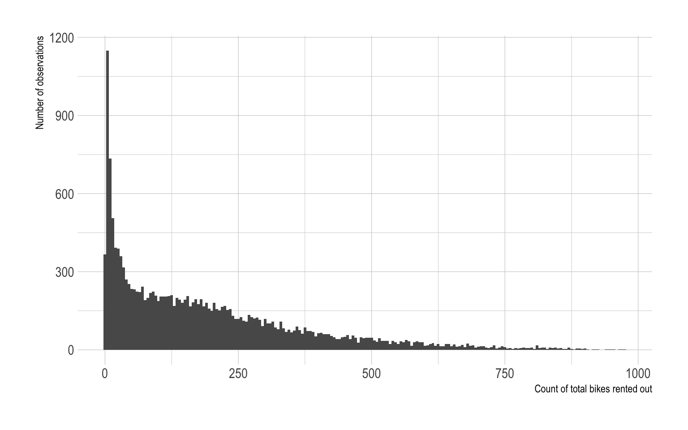
The distribution of
cntis right-skewed.The most common values for
cntrange from 0 to 50.Note: When visualizing a histogram, we should experiment on either
bins(the number of bins) orbinwidth(the width of a bin).
Q1c
Provide both (1) ggplot codes and (2) a couple of sentences to describe the distribution of cnt by year and month.
# density plot
ggplot(bikeshare) +
geom_density( aes(x = cnt, fill = month),
color = NA,
show.legend = F) +
facet_grid(month~year)
# histogram
ggplot(bikeshare) +
geom_histogram( aes(x = cnt, fill = month),
binwidth = 10,
color = NA,
show.legend = F) +
facet_grid(month~year)
# boxplot
ggplot(bikeshare) +
geom_boxplot( aes(x = cnt, y = month,
fill = month),
show.legend = F) 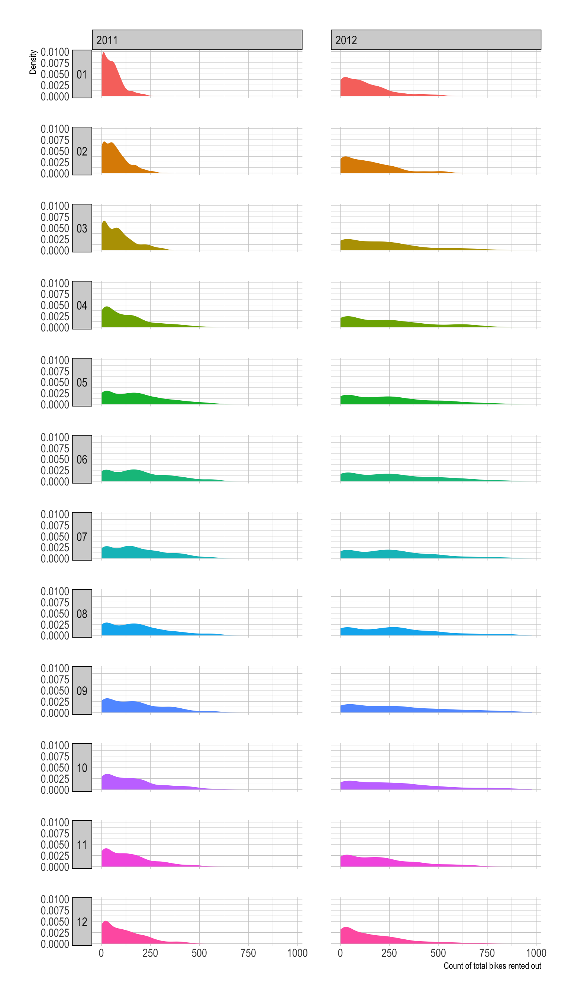
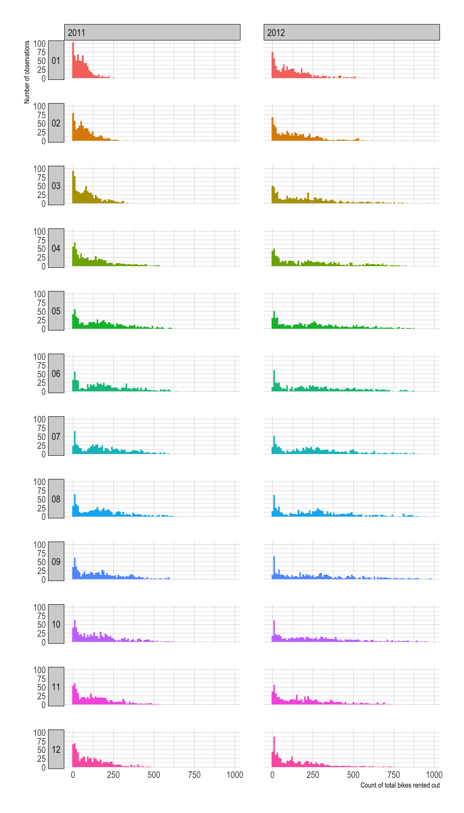
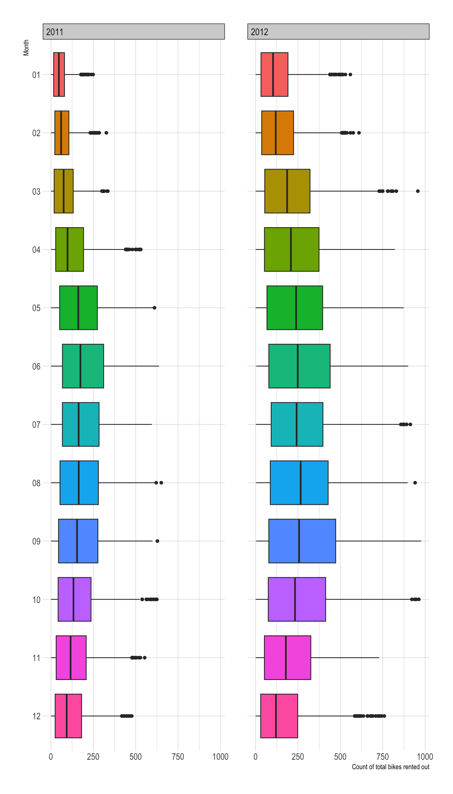
- Overall, the demand for bike rentals tends to be higher in 2012 than in 2011.
- Overall, the demand for bike rentals tends to be lower in winter.
Q1d
Provide both (1) ggplot codes and (2) a couple of sentences to describe the distribution of temp by year and month.
ggplot(bikeshare) +
geom_histogram(aes(x = temp, fill = month),
binwidth = .1,
show.legend = F) +
geom_vline(xintercept = 0, color = 'red') +
facet_grid(month ~ year) 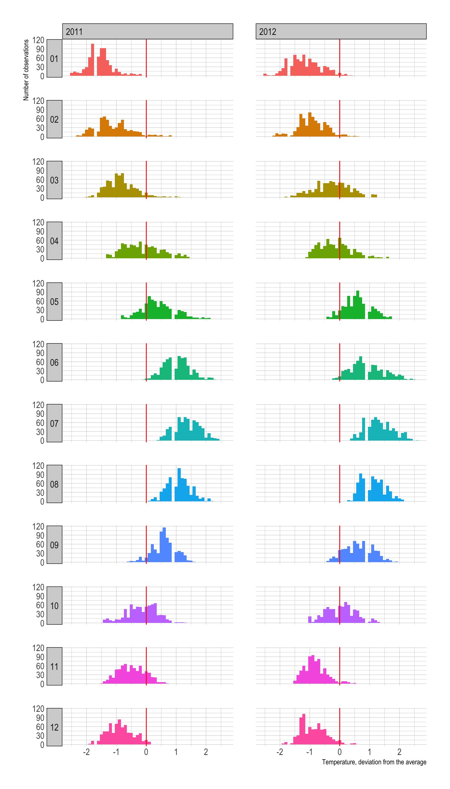
- We observe the four seasons when it comes to temperature.
- January tends to be the coldest and July is the hottest.
- The distribution of temperature across months looks similar across years 2011-2012.
Q1e
Provide both (1) ggplot codes and (2) a couple of sentences to describe the distribution of hum by year and month.
ggplot(bikeshare) +
geom_histogram(aes(x = hum, fill = month),
binwidth = .1,
show.legend = F) +
geom_vline(xintercept = 0, color = 'red') +
facet_grid(month ~ year) 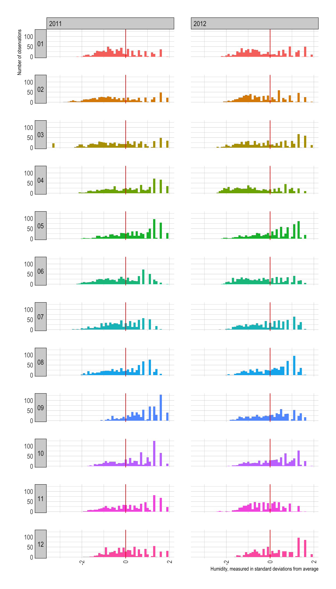
- In years 2011-2012 in Washington D.C., May, August, and September tend to be more humid than other months.
- In years 2011-2012 in Washington D.C., January and February tend to be less humid than other months.
- Overall, the distribution of humidity across months looks similar across years 2011-2012 in Washington D.C.
Q1f
Provide both (1) ggplot codes and (2) a couple of sentences to describe the distribution of windspeed by year and month.
ggplot(bikeshare) +
geom_density(aes(x = windspeed)) +
geom_vline(xintercept = 0, color = 'red') +
facet_grid(month ~ year) 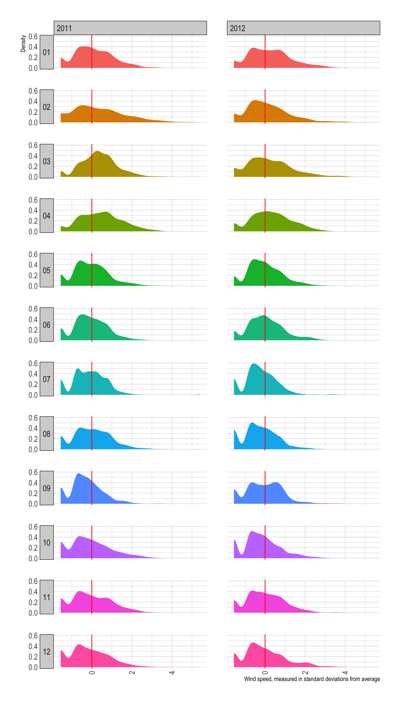
- Overall, the monthly distribution of wind speed looks similar across years 2011-2012 in Washington D.C.
- In years 2011-2012 in Washington D.C., noticeably slow wind speed, -1.5, which is a deviation from the standardized mean of wind speed 0, is observed throughout all months.
Q1g
Provide both (1) ggplot codes and (2) a couple of sentences to describe the relationship between temp and cnt.
ggplot(bikeshare,
aes(x = temp, y = cnt)) +
geom_hex() +
geom_smooth(color = 'red') +
geom_smooth(method = lm) 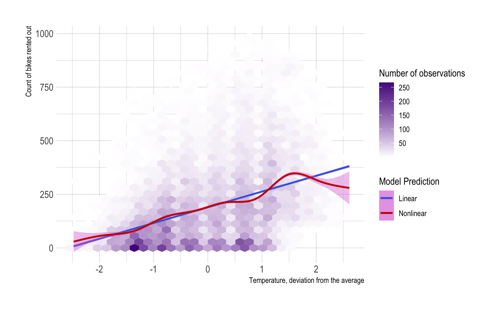
tempandcntare positively associated with each other.- Too high
temp(above 1.5) may lead to lowercnt.
Q1h
Provide both (1) ggplot codes and (2) a couple of sentences to describe the relationship between temp and cnt by year and month.
ggplot(bikeshare, aes(x = temp, y = cnt )) +
geom_point(alpha = .1) +
geom_smooth(color = "red3",
fill = "orchid",
method = lm) +
geom_smooth(color = "royalblue",
fill = "orchid") +
facet_grid(month~year)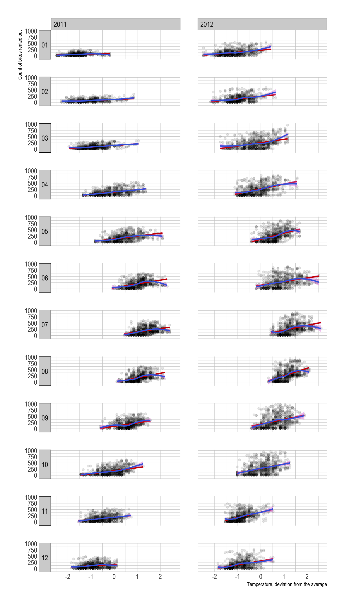
- Overall,
tempandcntare positively associated with each other. - In June, July, and August, the association between
tempandcntswitches from positive to negative at whichtempis around 1.5.
Q1i
Provide both (1) ggplot codes and (2) a couple of sentences to describe the relationship between weather_cond and cnt.
ggplot(bikeshare) +
geom_histogram(aes(x = cnt),
binwidth = 5) +
facet_grid(. ~ weather_cond)
ggplot(bikeshare) +
geom_density(aes(x = cnt)) +
facet_grid(. ~ weather_cond) 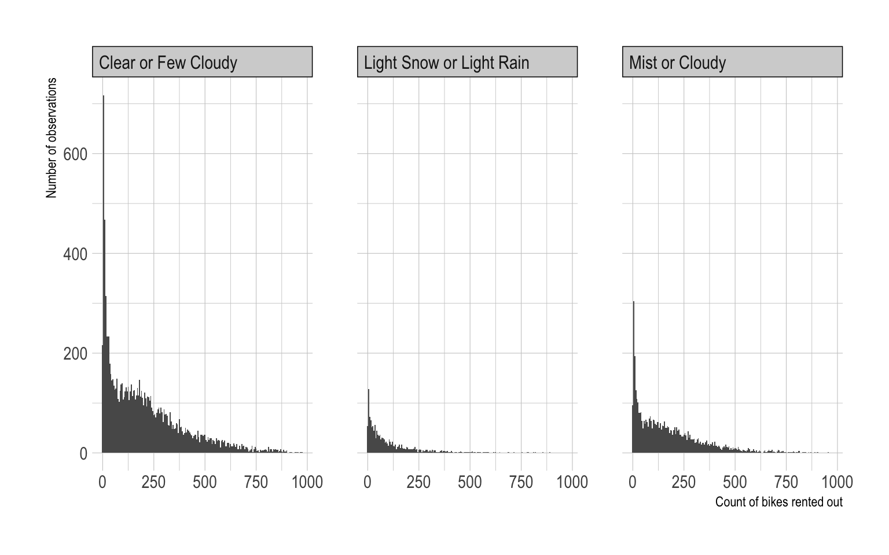
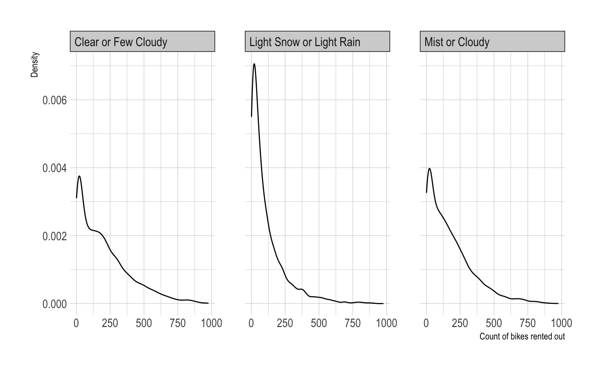
- In 2012-2013 in Washington D.C., people rented out bikes more often when
weather_condisClear or Few Cloudy. - The most common values for
cntare around 50 across all values ofweather_cond. - When
weather_condisLight Snow or Light Rain, people are more likely to rent less number of bikes.
Q1j
Provide both (1) ggplot codes and (2) a couple of sentences to describe the relationship between weather_cond and cnt by hr.
ggplot(bikeshare) +
geom_density(aes(x = cnt, fill = as.factor(hr)),
color = NA,
show.legend = F) +
facet_grid(hr ~ weather_cond, scale = "free_y") 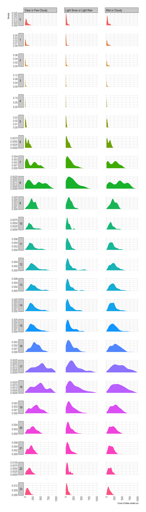
- The values of
cntduring commuting hours (hr7:00 A.M.-8:59 A.M. and 5:00 P.M.-7:59 P.M.) are often larger than other commuting hours.- It implies that a shortage of rental bikes is more likely to happen during these hours.
Q1k
Provide both (1) ggplot codes and (2) a couple of sentences to describe the relationship between wkday and cnt.
ggplot(bikeshare) +
geom_density(aes(x = cnt,
fill = as.factor(wkday)),
color = NA,
show.legend = F) +
facet_grid(. ~ wkday)
ggplot(bikeshare) +
geom_histogram(aes(x = cnt,
fill = as.factor(wkday)),
binwidth = 10,
color = NA,
show.legend = F) +
facet_grid(. ~ wkday)
ggplot(bikeshare,
aes(x = wkday, y = cnt)) +
geom_boxplot( aes(fill = wkday),
show.legend = F ) +
stat_summary(fun = mean)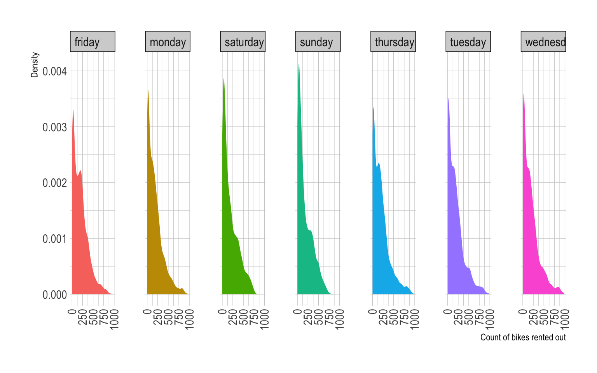

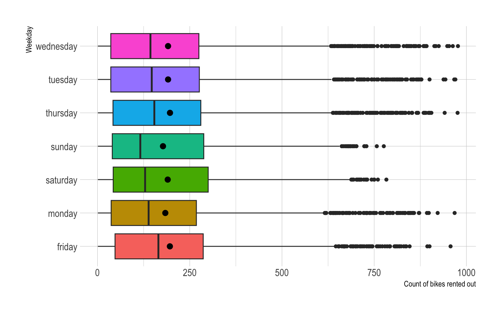
- The distribution of
cntis right-skewed, and looks similar across all values ofwkday.
Q1l
Provide both (1) ggplot codes and (2) a couple of sentences to describe the relationship between wkday and cnt by hr.
ggplot(bikeshare) +
geom_density(aes(x = cnt,
fill = as.factor(hr)),
color = NA,
show.legend = F) +
facet_grid(hr~wkday, scale = "free_y") ggplot(bikeshare) +
geom_histogram(aes(x = cnt,
fill = as.factor(hr)),
binwidth = 10,
color = NA,
show.legend = F) +
facet_grid(hr~wkday, scale = "free_y") ggplot(bikeshare) +
geom_boxplot(aes(x = cnt,
y = as.factor(hr),
fill = as.factor(hr)),
show.legend = F) +
facet_grid(.~wkday, scale = "free_y") 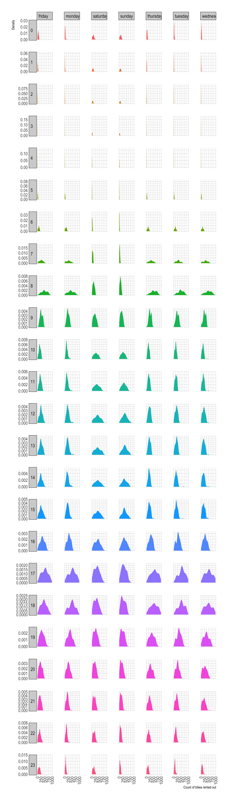
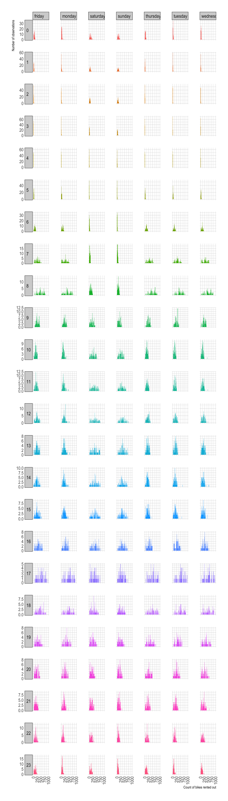
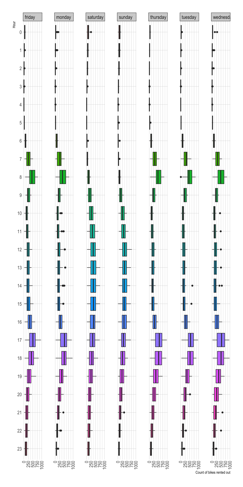
- During hours from 10 to 15, people tend to rent out bikes more on Saturday and Sunday than on other week days.
- During the morning commuting hours, people tend to rent out bikes less on Saturday and Sunday than on other week days.
Question 2
Q2a
Read the data file, NY_school_enrollment_socioecon.csv, as the data.frame object with the name, NY_school_enrollment_socioecon, using (1) the read_csv() function and (2) its URL, https://bcdanl.github.io/data/NY_school_enrollment_socioecon.csv.
url2 <- 'https://bcdanl.github.io/data/NY_school_enrollment_socioecon.csv'
NY_school_enrollment_socioecon <- read_csv(url2)
NY_school_enrollment_socioecon- We can view the data.frame
NY_school_enrollment_socioecon:
# A tibble: 372 × 310
fips year county_name pincp pover…¹ pover…² pover…³ pover…⁴ pover…⁵ pover…⁶
<dbl> <dbl> <chr> <dbl> <dbl> <dbl> <dbl> <dbl> <dbl> <dbl>
1 36001 2015 Albany 55120 30.9 13.9 8.2 4.6 30.3 13.2
2 36001 2016 Albany 55126 28 14.4 8.3 4.1 28.2 13.9
3 36001 2017 Albany 58814 28 14 8.1 3.7 26.5 13.7
4 36001 2018 Albany 59547 26.4 12.8 8.5 3.8 23.6 12.9
5 36001 2019 Albany 61876 27.1 11.9 7.6 4.1 23.6 12
6 36001 2020 Albany 66632 27.4 12.9 8.3 4.1 24.1 11.9
7 36003 2015 Allegany 32205 26.5 14.9 10.4 3.9 23 12.9
8 36003 2016 Allegany 32417 25.9 14.4 11.2 4 23.2 11.3
9 36003 2017 Allegany 34001 25.8 13.9 11.4 4.1 23.9 11.1
10 36003 2018 Allegany 34553 26.9 14.3 12 4.9 24 11.2
# … with 362 more rows, 300 more variables: poverty_male_assc <dbl>,
# poverty_male_bachelor_or_higher <dbl>, poverty_female_less_than_hs <dbl>,
# poverty_female_hs <dbl>, poverty_female_assc <dbl>,
# poverty_female_bachelor_or_higher <dbl>, c01_001 <dbl>, c01_002 <dbl>,
# c01_003 <dbl>, c01_004 <dbl>, c01_005 <dbl>, c01_006 <dbl>, c01_007 <dbl>,
# c01_008 <dbl>, c01_009 <dbl>, c01_010 <dbl>, c01_011 <dbl>, c01_012 <dbl>,
# c01_013 <dbl>, c01_014 <dbl>, c01_015 <dbl>, c01_016 <dbl>, …For description of variables in NY_school_enrollment_socioecon, refer to the file, ny_school_enrollment_socioecon_description.zip, which is in the Files section in our Canvas web-page. (I recommend you to extract the zip file, and then read the file, ny_school_enrollment_socioecon_description.csv, using Excel or Numbers.)
Here are some details about the data.frame,
NY_school_enrollment_socioecon:The geographic and time units of observation (row) in the data.frame,
NY_school_enrollment_socioecon, are New York county and year.
| FIPS | year | county_name | pincp | c01_001 | c02_002 |
|---|---|---|---|---|---|
| 36001 | 2015 | Albany | 55793 | 84463 | 4.7 |
- For example, the observation above means that in Albany county in year 2015 …
- Average personal income of people is $55,793.
- Population 3 years and over enrolled in school is 84,463.
- Percent of population 3 years and over enrolled in nursery school and preschool is 4.7%.
- The following is sample observations from Bronx and Livingston counties:

The following describes the variables:
c01_010: Total!!Population enrolled in college or graduate schoolSo,
c01_010is total population enrolled in college or graduate school;c02_010: Percent!!Population enrolled in college or graduate schoolSo,
c02_010is a percent of total population enrolled in college or graduate school;In which county is more likely for a person to be enrolled in a college or graduate school?
A county’s college enrollment level can be represented by an overall tendency of that county’s residents to be enrolled in college (as long as we are interested in analyzing how a human behaves overall!).
The size of a county’s population enrolled in college or graduate school (
c01_010) may not be appropriate to represent a county’s college enrollment level.- A county’s larger size of population enrolled in college does not necessarily mean people in people in that county are likely to be enrolled in college.
Consider the following example:
| County | Total.Population | Bachelor.s.Degree | High.School | Percent.of.Bachelor.s.Degree | Percent.of.High.School |
|---|---|---|---|---|---|
| A | 100,000 | 1,000 | 99,000 | 1.0% | 99.0% |
| B | 1,000 | 999 | 1 | 99.9% | 0.1% |
Although County A has the larger number of people that have bachelor’s degrees than County B, it is more appropriate to say that people in County B have a higher college enrollment than people in County A.
This is because the overall tendency of County B’s people to attend college is stronger than that of County A’s people.
Similarly, to represent a standard of living of people in a country, we do not use a country’s gross domestic product (GDP) but its GDP per capita (GDP per capita is GDP devided by population).
- For example, China records the second largest GDP in the world as of now. However, World Bank still considers China a middle-income country, because of its relatively low level of GDP per capita.
Q2b
Provide both (1) ggplot codes and (2) a couple of sentences to describe the relationship between college enrollment and educational attainment of population 45 to 64 years, and how such relationship varies by the type (public or private) of colleges.
To represent a level of educational attainment of population 45 to 64 years in a county, I choose variable,
100 - d01_024, a percent of population 45 to 64 years without bachelor’s degree.To represent a level of college enrollment of population in a county, I choose variable,
c02_010, a percent of population enrolled in college or graduate school.To represent a level of public college’s enrollment of population in a county, I choose variable,
c04_010, a percent of population enrolled in public college or graduate school.To represent a level of private college’s enrollment of population in a county, I choose variable,
c06_010, a percent of population enrolled in private college or graduate school.The following ggplot describes the relationship between college enrollment and educational attainment of population 45 to 64 years:
ggplot(NY_school_enrollment_socioecon,
aes(x = 100 - d01_024, y = c02_010)) +
geom_hex() +
geom_smooth(method = lm) +
geom_smooth(color = 'red') +
coord_fixed()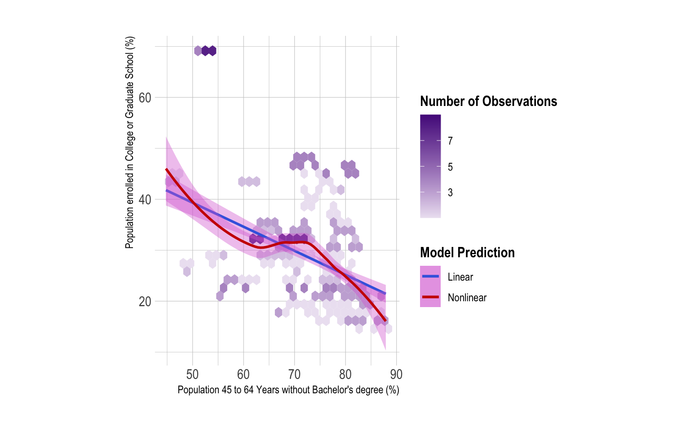
The percentage of population 45 to 64 years without Bachelor’s degree is negatively associated with the percentage of population enrolled in college or graduate school.
The following ggplot describes the relationship between college enrollment in public schools and educational attainment of population 45 to 64 years:
ggplot(NY_school_enrollment_socioecon,
aes(x = 100 - d01_024, y = c04_010)) +
geom_hex() +
geom_smooth(method = lm) +
geom_smooth(color = 'red') +
coord_fixed()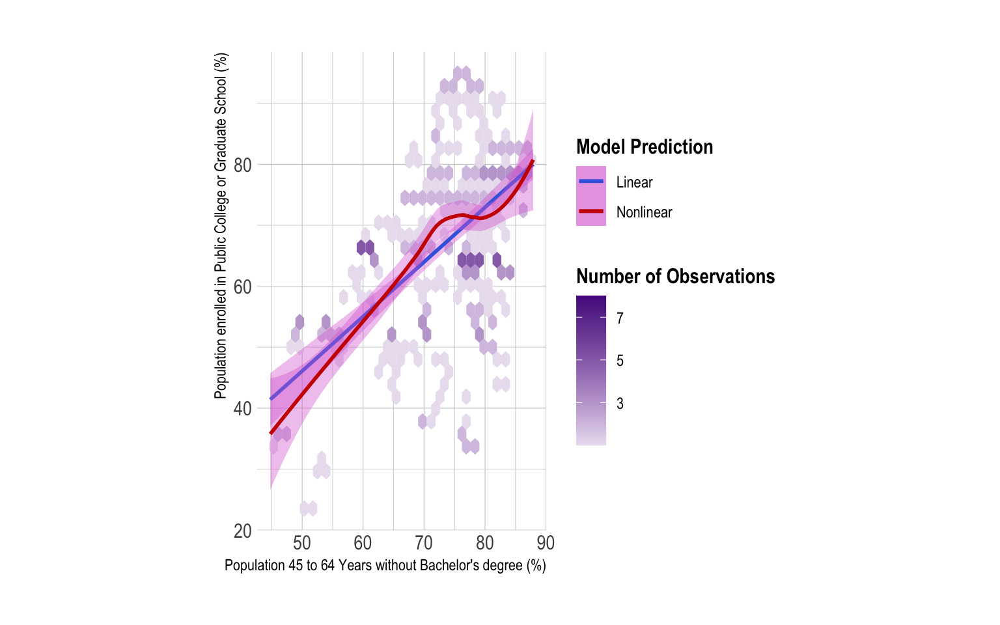
- The following ggplot describes the relationship between college enrollment in private schools and educational attainment of population 45 to 64 years:
ggplot(NY_school_enrollment_socioecon,
aes(x = 100 - d01_024, y = c06_010)) +
geom_hex() +
geom_smooth(method = lm) +
geom_smooth(color = 'red') +
coord_fixed()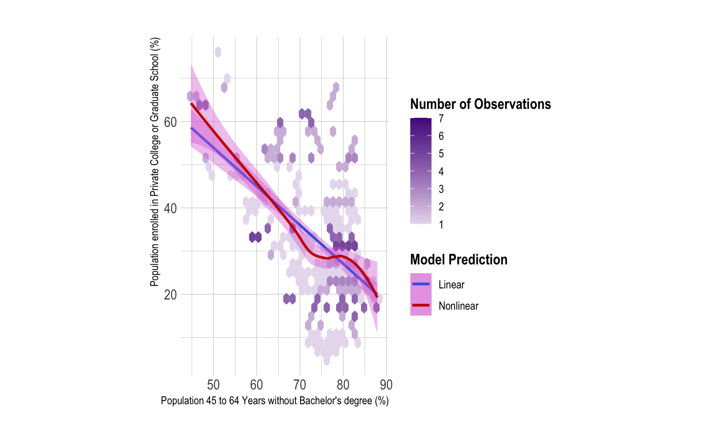
The percentage of population 45 to 64 years without Bachelor’s degree is positively associated with the percentage of population enrolled in public college or graduate school.
The percentage of population 45 to 64 years without Bachelor’s degree is negatively associated with the percentage of population enrolled in private college or graduate school.
Q2c
Provide both (1) ggplot codes and (2) a couple of sentences to describe how the relationships described in Q3b vary by gender of population 45 to 64 years.
To represent a level of educational attainment of male population 45 to 64 years in a county, I choose variable,
100 - d03_024, a percent of male population 45 to 64 years without bachelor’s degree.To represent a level of educational attainment of female population 45 to 64 years in a county, I choose variable,
100 - d05_024, a percent of female population 45 to 64 years without bachelor’s degree.The following ggplot describes the relationship between college enrollment and educational attainment of male/female populations 45 to 64 years:
ggplot(NY_school_enrollment_socioecon) +
geom_point(aes(x = 100 - d03_024, y = c02_010),
color = 'blue') +
geom_point(aes(x = 100 - d05_024, y = c02_010),
color = 'red') +
geom_smooth(aes(x = 100 - d03_024, y = c02_010),
color = 'blue',
method = lm) +
geom_smooth(aes(x = 100 - d05_024, y = c02_010),
color = 'red',
method = lm) 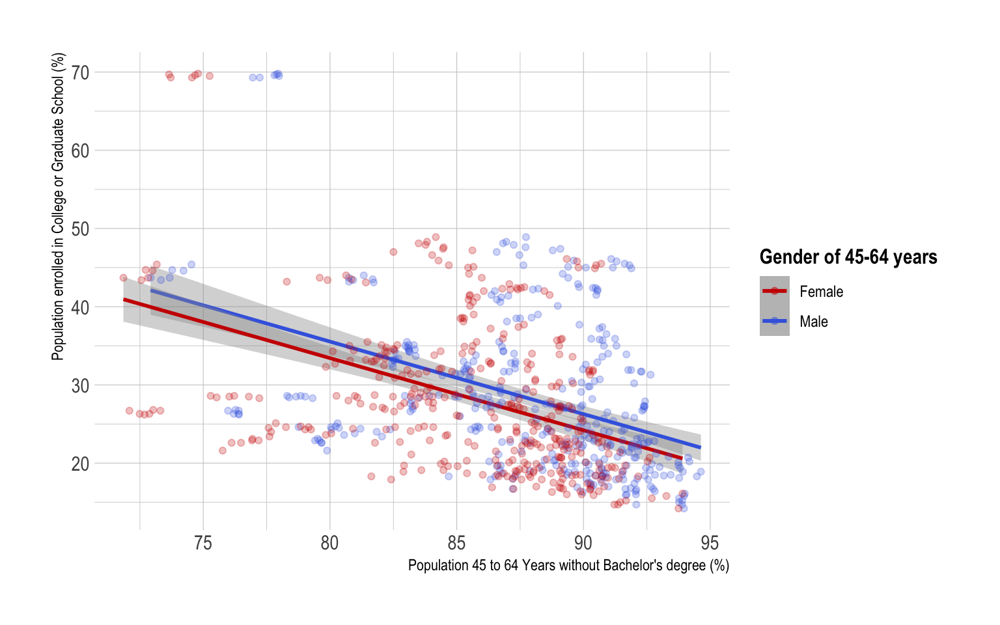
Regardless of a gender of population 45 to 64 years, the percentage of population 45 to 64 years without Bachelor’s degree is negatively associated with the percentage of population enrolled in college or graduate school.
Given the same level of the percentage of population enrolled in college or graduate school, male population 45 to 64 years without bachelor’s degree tends to be higher than female population 45 to 64 years without bachelor’s degree.
The following ggplot describes the relationship between public college enrollment and educational attainment of male/female populations 45 to 64 years:
ggplot(NY_school_enrollment_socioecon) +
geom_point(aes(x = 100 - d03_024, y = c04_010),
color = 'blue') +
geom_point(aes(x = 100 - d05_024, y = c04_010),
color = 'red') +
geom_smooth(aes(x = 100 - d03_024, y = c04_010),
color = 'blue',
method = lm) +
geom_smooth(aes(x = 100 - d05_024, y = c04_010),
color = 'red',
method = lm) 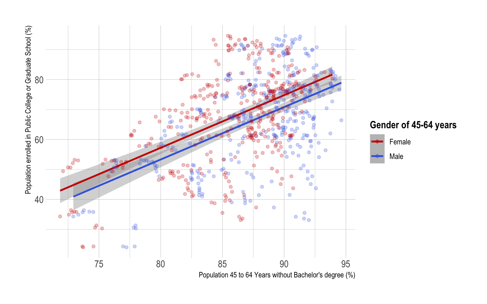
Regardless of a gender of population 45 to 64 years, the percentage of population 45 to 64 years without Bachelor’s degree is positively associated with the percentage of population enrolled in public college or graduate school.
For the same level of the percentage of population 45 to 64 years without Bachelor’s degree, a level of educational attainment of female population 45 to 64 years may be associated with a higher level of public college enrollment than that of male population 45 to 64 years.
Given the same level of the percentage of population enrolled in public college or graduate school, male population 45 to 64 years without bachelor’s degree tends to be higher than female population 45 to 64 years without bachelor’s degree.
The following ggplot describes the relationship between private college enrollment and educational attainment of male/female populations 45 to 64 years:
ggplot(NY_school_enrollment_socioecon) +
geom_point(aes(x = 100 - d03_024, y = c06_010),
color = 'blue') +
geom_point(aes(x = 100 - d05_024, y = c06_010),
color = 'red') +
geom_smooth(aes(x = 100 - d03_024, y = c06_010),
color = 'blue',
method = lm) +
geom_smooth(aes(x = 100 - d05_024, y = c06_010),
color = 'red',
method = lm) 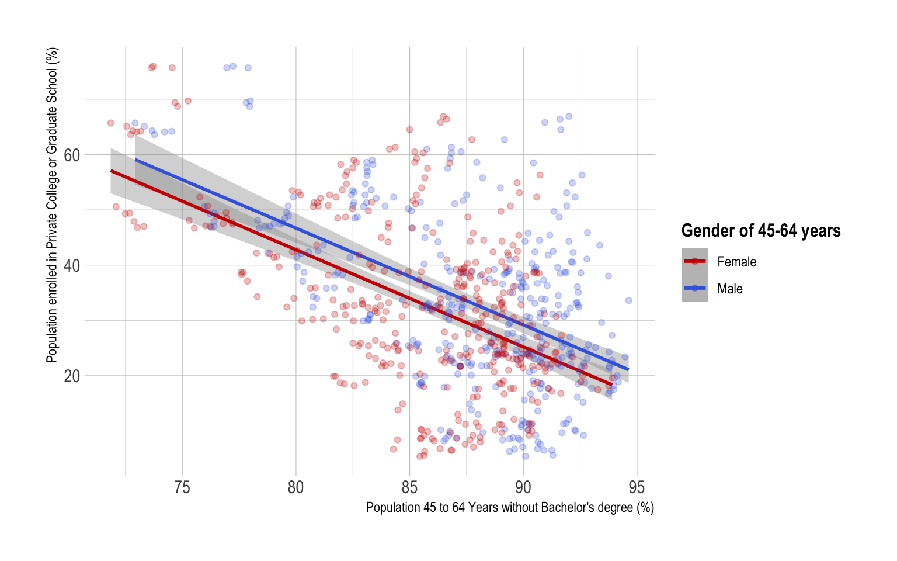
Regardless of a gender of population 45 to 64 years, the percentage of population 45 to 64 years without Bachelor’s degree is negatively associated with the percentage of population enrolled in private college or graduate school.
Given the same level of the percentage of population enrolled in private college or graduate school, male population 45 to 64 years without bachelor’s degree tends to be higher than female population 45 to 64 years without bachelor’s degree.
Q2d
Provide both (1) ggplot codes and (2) a couple of sentences to describe how the relationships described in Q3b vary by gender of college enrollment.
To represent a level of male college enrollment of population in a county, I choose variable,
c02_011, a percent of male population enrolled in college or graduate school.To represent a level of female college enrollment of population in a county, I choose variable,
c02_012, a percent of female population enrolled in college or graduate school.The following ggplot describes the relationship between male/female college enrollment and educational attainment of populations 45 to 64 years:
ggplot(NY_school_enrollment_socioecon) +
geom_point(aes(x = 100-d01_024, y = c02_011),
color = 'blue') +
geom_point(aes(x = 100-d01_024, y = c02_012),
color = 'red') +
geom_smooth(aes(x = 100-d01_024, y = c02_011),
color = 'blue',
method = lm) +
geom_smooth(aes(x = 100-d01_024, y = c02_012),
color = 'red',
method = lm) 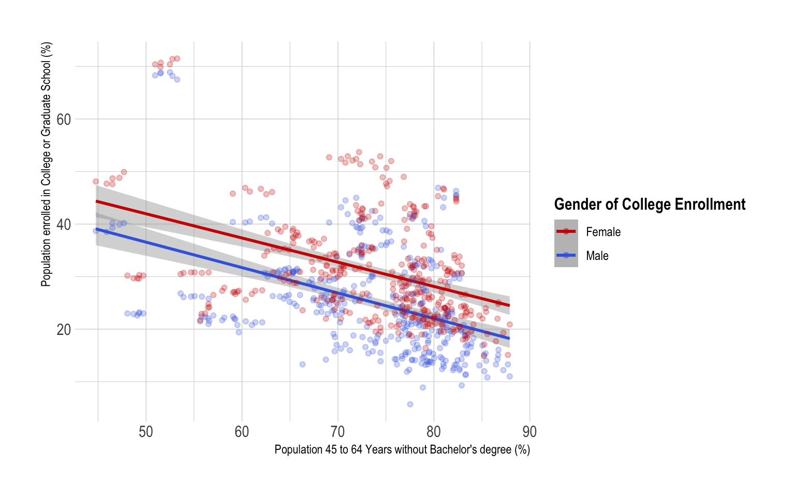
Regardless of a gender of college enrollment, the percentage of population 45 to 64 years without Bachelor’s degree is negatively associated with the percentage of population enrolled in college or graduate school.
For the same level of the percentage of population 45 to 64 years without Bachelor’s degree, a level of educational attainment of population 45 to 64 years may be associated with a higher level of female college enrollment than that of male college enrollment.
Given the same level of the percentage of population 45 to 64 years without bachelor’s degree, male population enrolled in college or graduate schools tends to be lower than female population enrolled in college or graduate schools.
To represent a level of male population in a county that are enrolled in public colleges, I choose variable,
c04_011, a percent of male population enrolled in public college or graduate school.To represent a level of female population in a county that are enrolled in public colleges, I choose variable,
c04_012, a percent of female population enrolled in public college or graduate school.The following ggplot describes the relationship between male/female public college enrollment and educational attainment of populations 45 to 64 years:
ggplot(NY_school_enrollment_socioecon) +
geom_point(aes(x = 100-d01_024, y = c04_011),
color = 'blue') +
geom_point(aes(x = 100-d01_024, y = c04_012),
color = 'red') +
geom_smooth(aes(x = 100-d01_024, y = c04_011),
color = 'blue',
method = lm) +
geom_smooth(aes(x = 100-d01_024, y = c04_012),
color = 'red',
method = lm) 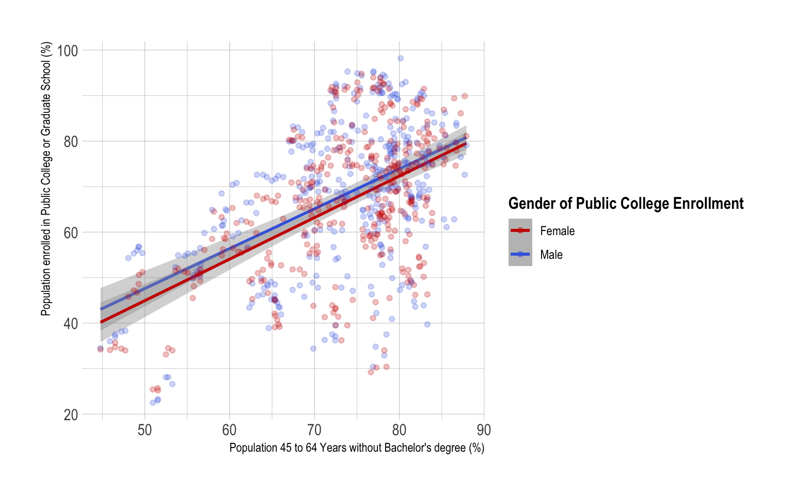
To represent a level of male population in a county that are enrolled in private colleges, I choose variable,
c06_011, a percent of male population enrolled in private college or graduate school.To represent a level of male population in a county that are enrolled in private colleges, I choose variable,
c06_012, a percent of female population enrolled in private college or graduate school.The following ggplot describes the relationship between male/female public college enrollment and educational attainment of populations 45 to 64 years:
ggplot(NY_school_enrollment_socioecon) +
geom_point(aes(x = 100-d01_024, y = c06_011),
color = 'blue') +
geom_point(aes(x = 100-d01_024, y = c06_012),
color = 'red') +
geom_smooth(aes(x = 100-d01_024, y = c06_011),
color = 'blue',
method = lm) +
geom_smooth(aes(x = 100-d01_024, y = c06_012),
color = 'red',
method = lm) 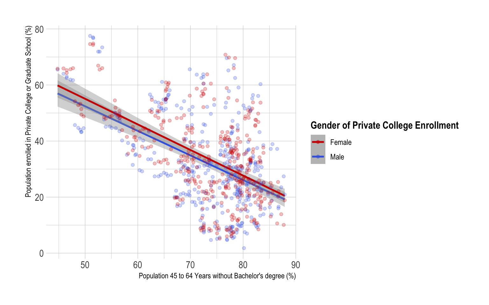
Regardless of a gender of college enrollment, the percentage of population 45 to 64 years without Bachelor’s degree is positively associated with the percentage of population enrolled in public college or graduate school.
Regardless of a gender of college enrollment, the percentage of population 45 to 64 years without Bachelor’s degree is negatively associated with the percentage of population enrolled in private college or graduate school.